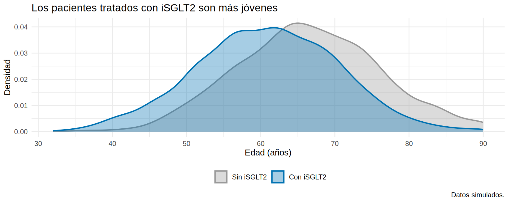
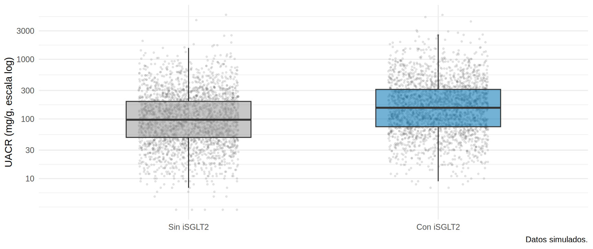
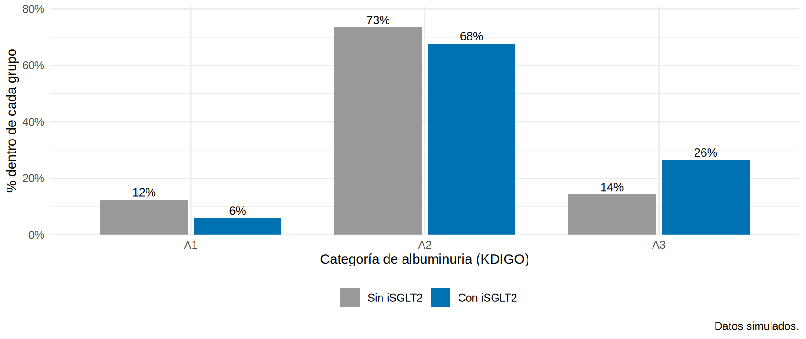
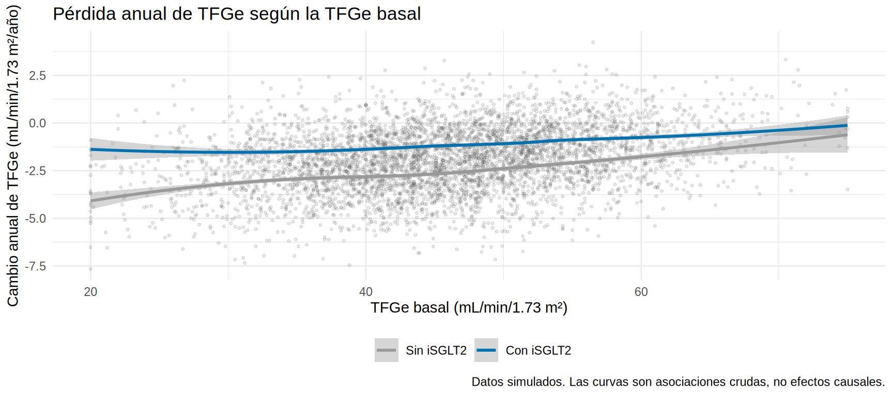
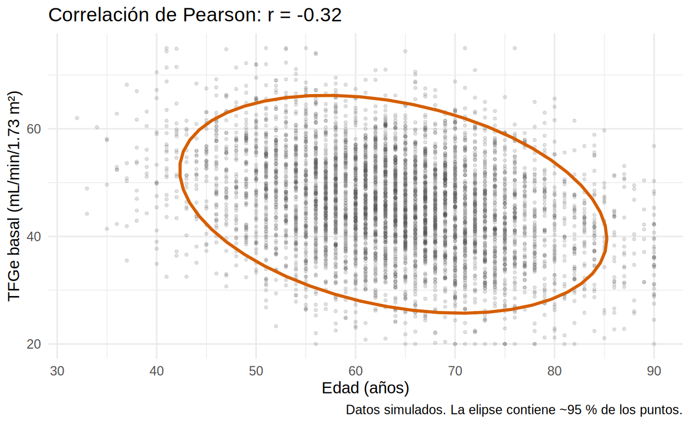
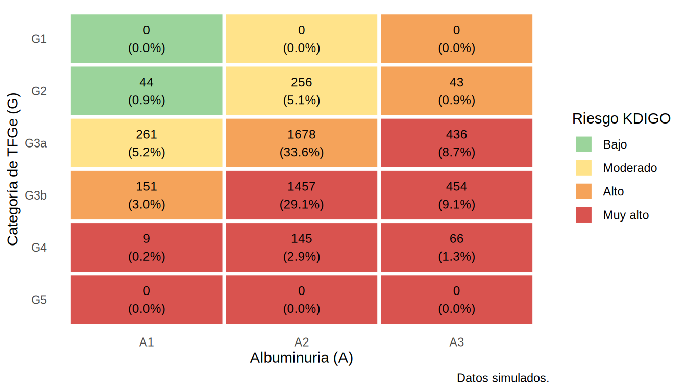
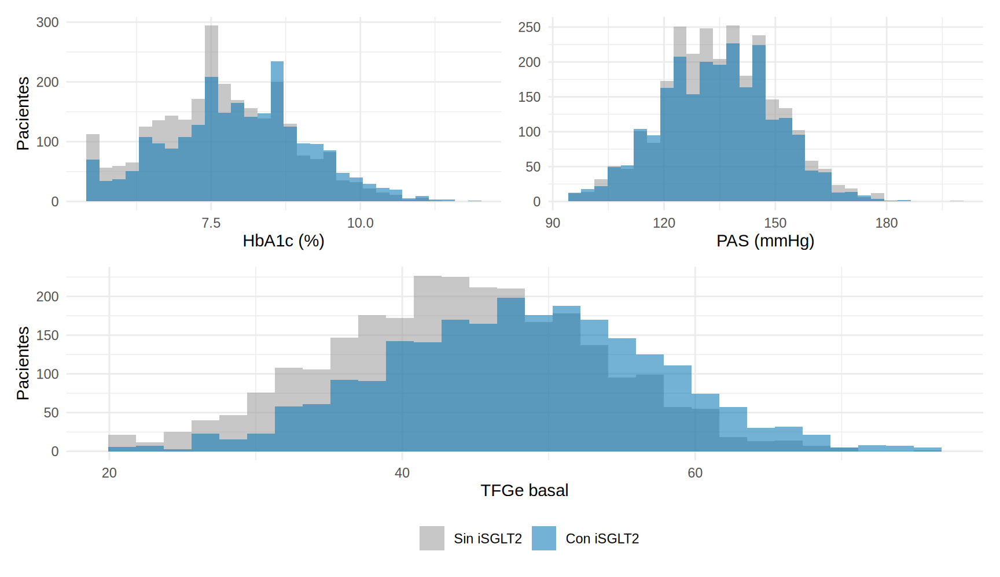

library(tidyverse)
library(patchwork)
source("R/funciones_epi.R")
ckd <- read_csv("Bases/ckd_isglt2.csv", show_col_types = FALSE) |>
mutate(
trat = factor(isglt2, levels = 0:1, labels = c("Sin iSGLT2", "Con iSGLT2")),
sexo = factor(sexo, levels = c("Mujer", "Hombre")),
cat_g = categoria_g(tfg_basal), cat_a = categoria_a(uacr),
riesgo = riesgo_kdigo(cat_g, cat_a)
)
# Paleta de Okabe-Ito (apta para daltonismo) y tema común
col_trat <- c("Sin iSGLT2" = "#999999", "Con iSGLT2" = "#0072B2")
tema <- theme_minimal(base_size = 11) + theme(legend.position = "bottom")Gráficos que comunican
Nota🩺 Escenario
Te aceptaron un póster para el congreso de nefrología y te piden “una figura que se entienda en cinco segundos”. Tienes la base de 5 000 pacientes (simulada) y mil maneras de dibujarla. ¿Cuál eliges? La respuesta empieza por una pregunta: ¿qué quieres que vea el lector?
Lo que vamos a hacer
- Elegir el gráfico según la pregunta y el tipo de variable.
- Aprender la “receta” de
ggplot2(datos + ejes + formas) y usarla para seis gráficos clave. - Combinar varios gráficos, guardarlos para un artículo y recordar que un gráfico crudo describe, no demuestra.
Paso 1. Primero la pregunta, después el gráfico
Un buen gráfico responde una pregunta de forma que el lector la entienda en pocos segundos. Cinco reglas:
- Muestra los datos, no solo el resumen. Las barras con “media ± EE” ocultan la distribución; prefiere histogramas, cajas con puntos o densidades.
- Elige el gráfico según el tipo de variable (tabla abajo).
- Ejes honestos y con unidades. Las barras parten de cero; los puntos y las líneas no necesariamente.
-
Color con propósito y accesible (paletas aptas para daltonismo, como
viridiso la de Okabe-Ito). - Sin adornos: nada de 3D, pasteles ni doble eje Y.
| Pregunta | Tipo de variables | Gráfico |
|---|---|---|
| ¿Cómo se distribuye? | Continua | Histograma, densidad, caja |
| ¿Cuántos hay de cada tipo? | Categórica | Barras (con porcentaje) |
| ¿Cómo se comparan grupos? | Continua por categoría | Cajas + puntos, violín |
| ¿Cómo se relacionan dos continuas? | Continua × continua | Dispersión + curva suavizada |
| ¿Cómo evoluciona en el tiempo? | Continua × tiempo | Líneas (por paciente o promedio) |
| ¿Qué combinación de dos categorías hay? | Categórica × categórica | Mapa de calor |
Paso 2. La receta de ggplot2
Un gráfico de ggplot2 se construye por capas, con +: (1) los datos, (2) qué variable va en cada eje o color (aes()), (3) la forma (geom_*), (4) los rótulos (labs()) y (5) el tema. Preparamos la base y una paleta común para todo el subcapítulo:
Paso 3. Distribución de una variable continua entre grupos
Para comparar la forma de la edad entre tratados y no tratados, un par de densidades superpuestas (un histograma suavizado). Capa a capa: datos (ckd), eje x y color (edad, trat), forma (geom_density), colores manuales y rótulos:
ggplot(ckd, aes(edad, fill = trat, color = trat)) +
geom_density(alpha = 0.35, linewidth = 0.8) +
scale_fill_manual(values = col_trat, name = NULL) +
scale_color_manual(values = col_trat, name = NULL) +
labs(x = "Edad (años)", y = "Densidad",
title = "Los pacientes tratados con iSGLT2 son más jóvenes",
caption = "Datos simulados.") +
tema
Qué vemos. La curva de los tratados está desplazada hacia edades menores: es el mismo hallazgo de la Tabla 1 (DEM ≈ −0.58), ahora visible de un golpe.
El gráfico de cajas con puntos muestra la mediana, el RIC y los valores individuales (geom_jitter los separa horizontalmente para que no se tapen). Con una variable tan asimétrica como la UACR usamos escala logarítmica:
ggplot(ckd, aes(trat, uacr, fill = trat)) +
geom_jitter(width = 0.2, alpha = 0.12, size = 0.6, color = "grey30") +
geom_boxplot(alpha = 0.55, outlier.shape = NA, width = 0.5) +
scale_y_log10(breaks = c(10, 30, 100, 300, 1000, 3000)) +
scale_fill_manual(values = col_trat, guide = "none") +
labs(x = NULL, y = "UACR (mg/g, escala log)", caption = "Datos simulados.") +
tema
Cómo leer una caja. La línea central es la mediana (97 mg/g en los no tratados y 154 en los tratados); los bordes de la caja son Q1 y Q3; los “bigotes” llegan hasta ~1.5 veces el RIC, y los puntos más allá se consideran valores atípicos (aquí los ocultamos porque el jitter ya dibuja todos). Atípico no significa error: significa “lejos del resto”; compruébalo antes de borrarlo.
Paso 4. Frecuencias: barras con porcentaje
ckd |>
count(trat, cat_a) |>
group_by(trat) |>
mutate(pct = n / sum(n)) |>
ggplot(aes(cat_a, pct, fill = trat)) +
geom_col(position = position_dodge(width = 0.8), width = 0.75) +
geom_text(aes(label = scales::percent(pct, accuracy = 1)),
position = position_dodge(width = 0.8), vjust = -0.4, size = 3.3) +
scale_y_continuous(labels = scales::percent_format(), expand = expansion(mult = c(0, 0.1))) +
scale_fill_manual(values = col_trat, name = NULL) +
labs(x = "Categoría de albuminuria (KDIGO)", y = "% dentro de cada grupo",
caption = "Datos simulados.") +
tema
Qué vemos. Fíjate en el eje: es “% dentro de cada grupo” (cada color suma 100 %). Los tratados tienen más A3 (26 % frente a 14 %), reflejo de que se prescribe el fármaco a quien tiene más albuminuria.
Paso 5. Dos continuas: dispersión y curva suavizada
Con 5 000 puntos, la nube se vuelve una mancha. Se reduce la opacidad (alpha) y se añade una curva suavizada (geom_smooth) que resume la tendencia. Al mirar una dispersión fíjate en cuatro cosas: la forma (¿recta o curva?), la dirección (¿sube o baja?), la dispersión (¿qué tan apretada es la nube?) y los valores atípicos.
ggplot(ckd, aes(tfg_basal, pendiente_tfg)) +
geom_point(alpha = 0.12, size = 0.7, color = "grey30") +
geom_smooth(aes(color = trat), method = "loess", formula = y ~ x, se = TRUE, linewidth = 1) +
scale_color_manual(values = col_trat, name = NULL) +
labs(x = "TFGe basal (mL/min/1.73 m²)", y = "Cambio anual de TFGe (mL/min/1.73 m²/año)",
title = "Pérdida anual de TFGe según la TFGe basal",
caption = "Datos simulados. Las curvas son asociaciones crudas, no efectos causales.") +
tema
La forma es aproximadamente recta (con algo de curvatura en los extremos) y la dirección ascendente (a mayor TFGe basal, la pendiente es algo menos negativa); la nube es muy ancha, o sea, la TFGe basal explica poco de la pendiente. La curva de los tratados queda por encima de la de los no tratados: promedian -1.11 y -2.61 mL/min/1.73 m²/año.
Una elipse que contiene aproximadamente el 95 % de los puntos hace visible la dirección y la fuerza de la relación (cuanto más alargada e inclinada, mayor la correlación). Con la edad y la TFGe basal:
ggplot(ckd, aes(edad, tfg_basal)) +
geom_point(alpha = 0.15, size = 0.7, color = "grey30") +
stat_ellipse(level = 0.95, color = "#D55E00", linewidth = 1) +
labs(x = "Edad (años)", y = "TFGe basal (mL/min/1.73 m²)",
title = paste0("Correlación de Pearson: r = ", round(cor(ckd$edad, ckd$tfg_basal), 2)),
caption = "Datos simulados. La elipse contiene ~95 % de los puntos.") +
theme_minimal(base_size = 11)
La elipse está inclinada hacia abajo: a mayor edad, menor TFGe (r = -0.32), con mucha dispersión. De este coeficiente se habla en el Cap. 8.1.
Advertencia⚠️ Gráfico crudo ≠ efecto causal
La curva de los tratados queda por encima de la de los no tratados, pero ya vimos en la Tabla 1 que ambos grupos difieren en edad, albuminuria y más. Un gráfico describe; para estimar el efecto hay que ajustar (Caps. 8 y 12). Y cuidado con los ejes truncados: unas barras que no parten de cero exageran cualquier diferencia.
Paso 6. Mapa de calor KDIGO
La clasificación G × A se presenta como mapa de calor con el número de pacientes en cada celda. Usamos .drop = FALSE para que aparezcan también las celdas vacías:
niveles_riesgo <- c("Bajo" = "#9bd49b", "Moderado" = "#ffe38a", "Alto" = "#f5a35a", "Muy alto" = "#d9534f")
ckd |>
count(cat_g, cat_a, .drop = FALSE) |>
mutate(riesgo = riesgo_kdigo(cat_g, cat_a),
pct = n / sum(n)) |>
ggplot(aes(cat_a, fct_rev(cat_g), fill = riesgo)) +
geom_tile(color = "white", linewidth = 1.2) +
geom_text(aes(label = paste0(n, "\n(", scales::percent(pct, accuracy = 0.1), ")")), size = 3.2) +
scale_fill_manual(values = niveles_riesgo, name = "Riesgo KDIGO") +
labs(x = "Albuminuria (A)", y = "Categoría de TFGe (G)", caption = "Datos simulados.") +
theme_minimal(base_size = 11) + theme(panel.grid = element_blank())
Qué vemos. El grueso de los pacientes se concentra en G3a-G3b con A2-A3 (riesgo alto o muy alto: 89 % de la cohorte). Las filas G1 y G5 aparecen vacías porque simulamos pacientes G2 a G4.
Paso 7. Varios gráficos juntos
facet_wrap() repite el mismo gráfico por subgrupo; patchwork ordena gráficos distintos con + (lado a lado), / (apilados) y plot_layout():
g1 <- ggplot(ckd, aes(hba1c, fill = trat)) + geom_histogram(bins = 30, position = "identity", alpha = 0.55) +
scale_fill_manual(values = col_trat, name = NULL) + labs(x = "HbA1c (%)", y = "Pacientes") + tema
g2 <- ggplot(ckd, aes(pas, fill = trat)) + geom_histogram(bins = 30, position = "identity", alpha = 0.55) +
scale_fill_manual(values = col_trat, name = NULL) + labs(x = "PAS (mmHg)", y = NULL) + tema
g3 <- ggplot(ckd, aes(tfg_basal, fill = trat)) + geom_histogram(bins = 30, position = "identity", alpha = 0.55) +
scale_fill_manual(values = col_trat, name = NULL) + labs(x = "TFGe basal", y = "Pacientes") + tema
(g1 + g2) / g3 + plot_layout(guides = "collect") &
theme(legend.position = "bottom")
Cuando el gráfico esté listo, guárdalo con la calidad que piden las revistas (300 dpi; unas 7 pulgadas de ancho para toda la página y 3.5 para una columna). ggsave() guarda el último gráfico, o el objeto que le pases con plot =:
ggsave("figuras/uacr_por_tratamiento.png", width = 7, height = 4, dpi = 300)
Importante🎯 En resumen
- Un gráfico = una pregunta; elígelo según el tipo de variable.
- Continuas: histograma, densidad o caja con puntos. Categóricas: barras con porcentaje. Dos continuas: dispersión con curva suavizada (y elipse). Dos categóricas: mapa de calor.
- Escala logarítmica para variables asimétricas como la UACR; paletas accesibles y unidades en los ejes.
- Los gráficos crudos describen: no se interpretan como efectos causales.
- Guarda con
ggsave(dpi = 300)y deja el código junto a la figura.
Ejercicio
- Haz un gráfico de cajas de la PAS por categoría G (
cat_g). ¿Aumenta o disminuye con la TFGe? - Dibuja la TFGe basal por sexo y tratamiento con
facet_wrap(~ sexo). - Reproduce el mapa de calor KDIGO solo para pacientes con iSGLT2. ¿Cambia la distribución?